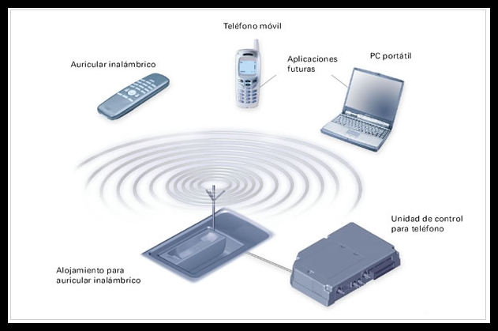
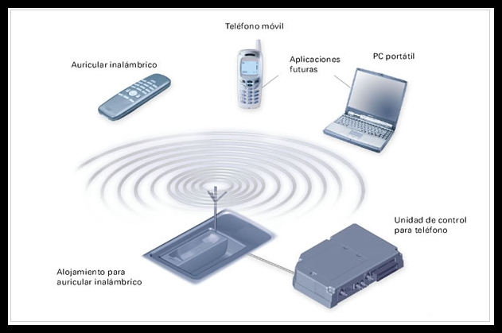

Introducción
Los dispositivos permiten la transmisión y control de datos. Tanenbaum los clasifica por función.
Desarrollo
Incluyen repetidores, switches y routers. Stallings explica sus diferencias.
 

Conclusión
En conclusión, cada dispositivo cumple un rol específico.